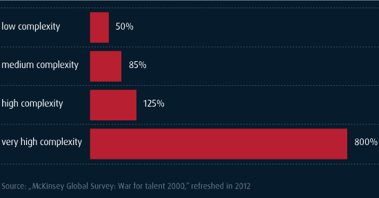

HOW WE WORK
State of the art thinking, disciplined execution and flawless integration.
When is the last time you felt
about business?
What We Do
With unmatched understanding of the digital world, we offer state of the art thinking, disciplined execution & flawless integration.
Whether your project is an enterprise transformation or a startup-like innovation initiative, we are with you the whole way – strategic direction, approach, implementation – & will stay your trusted advisors long after the project's successful completion.
- Understand the unmet needs of your end user
- Design the best possible strategy
- Bridge the strategy-execution gap
- Staff your initiative with true digital experts
- Identify & drive value where it matters
- Build new capabilities in your staff
But mostly, we help you to succeed. All of us at Digital Leadership have a real track record. Your success becomes our mission, which we pursue with energy, commitment & entrepreneurial spirit.
Value
What are your 20% that are creating 80% of your success? And what are the 4% that create 64% of your success?
Outperformers are superior in navigating uncertainty & driving value, particularly in high-complexity environments. This is why we so highly value real expertise, why we put so much emphasis on the right people.
Here is how we make a difference:
- Bringing a new understanding – reframe the context & opportunity to drive value.
- Delivering value on what matter most – identify what drives the most value & increasing your capacity for agile & value-driven delivery.
- Bridging the strategy-execution gap – think holistically & translate strategy into smart execution by connecting what should be connected.
- Outperformers – bring proven performers to every project, as well as helping customers & partners identify & build their own talent.
- Stakeholder buy-in – bnavigate the complex politics & streams in an organization & take along those who are involved – at any level.
- Agile delivery – create a strong direction & strategy, but go for agile delivery, adapting when new learnings & insights arise.
- LEAP! (Launch Early & Pivot) – quickly release prototypes or Minimum Viable Products (MVPs). Test, measure, analyze & iterate.
Integration
At Digital Leadership, our approach is highly adaptive, smoothly integrating where you need us. Our team becomes a part of your team, & yours a part of ours. We all work toward the same goal & share the same success.
But integration must go much further. More then 70% of all strategy projects fail due to the infamous strategy-execution gap. To bridge this gap, an initiative must itself be fully integrated.
Every aspect of an initiative – strategy, innovation, product development, branding & marketing, technology, user experience – must smartly integrate across an initiative’s life cycle.
Our Digital Leadership Strategy Approach offers an in-depth & holistic answer to this crucial, yet often woefully neglected, aspect of integration.
One team, a clearly articulated direction & an integrated & integrative approach – this is what it takes.
People
The key success factor is, & always will be, the right people – particularly in high-complexity environments. The best strategy won’t be a success with the wrong people executing it, but even an average strategy can become a great success with the right people & setting.
We strive to bring this level of talent to any project, as well as helping our customers & partners identify & build their own talent. We are one team & we will either fly or sink together.
We offer experts in all areas of digital innovation, enterprise transformation & agile management, including:
- Project Leaders
- Enterprise Strategy
- Business Analysts
- User Experience Experts
- Branding & Marketing Specialists
We can support you as an entire team or as individual role-based consultants, & can join your initiative at the very beginning or step in at any point where you see need.
The relationship between quality of talent and business performance is dramatic.
Productivity gap between average performers and high performers, by job complexity
The End User
The end user is the most neglected stakeholder of an initiative. He is often neither asked nor involved. Ultimately, though, your customers pay the bill. It does not take an expert to see that something is going awfully wrong here.
The end user has to be center stage. Value can be measured by how far we are addressing their needs or, put properly, their ”Jobs-to-be-Done.”
At the same time, a thorough understanding of customer needs is also the basis for building a value-driven roadmap – the core of strategy-execution. A customer's unmet needs are always your businesses biggest opportunity.

Positive thinking, positive energy
Our world has an abundance of opportunities for all of us. Working together as a team we can recognize & achieve them.

Be handshake ready!
Trust proves again & again to be the most powerful & important component of success, & the most underrated of economic power. We love a firm handshake!

Building relationships that last
People are the key to who we are & what we can accomplish. We strive to treat everybody with respect & find each person's true value. This is one of the reasons we've never lost a customer, & are surrounded by such strong & committed team members.

Release the handbrake
Think in terms of progress & ask the tough questions without fear. Evolution is often the wisest way forward, but sometimes we need to go for a breakthrough.

A strong why will answer any how
Identifying a strong purpose always helps us build value for you, your shareholders, your customers & the environment at large.
A love of bad drafts
Every great strategy started out as a bad draft. Let's see where we are right now & consider the options. With our expertise & experience we can provide a new understanding of how to drive value.